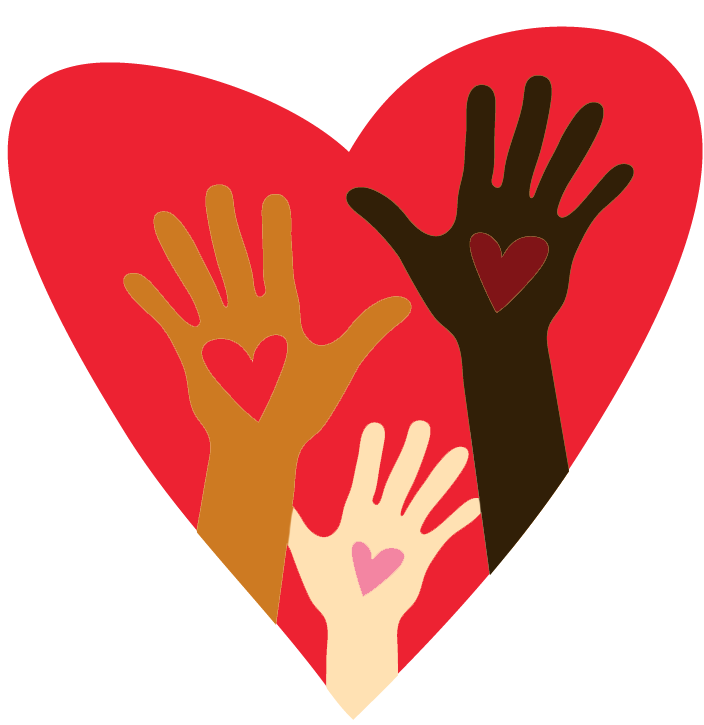

Friend in Distress
About this web application
Friend in Distress is a self-administered, suicide risk assessment and mental health resource for children and adolescents. Components include: peer vignette, calming techniques, psychoeducation, safety planning, crisis service lists, and suggested therapeutic programs. Information is personalized based on demographic factors, potential psychological symptoms, and level of risk.
I wrote this prototype because I thought how my role as a crisis responder and campus mental well-being coordinator could be digitized to serve more people in need. This application is a prototype created for learning purposes.
Instructions: Complete the following to receive personalized support.
Tell us about yourself (Optional) Note: You are assumed as a South East Asian female (above 11 y/o) if you select no options.
Safety Checklist (Select all that apply)
We are here to help. None of your information will be stored.
Screening for distress
This will have the program assume you are a South East Asian female (older than 11 y/o) who potentially has anxiety, depression, disordered eating, and problematic substance use.
Important:
For this next section, choose what best describes how much (or how often) you have been bothered by each problem during the past TWO (2) WEEKS for each question.
During the past TWO (2) WEEKS, how much (or how often) have you...
You are not alone.
You have inherent value.
You have strength for reaching out.
Meet .
Personalized intervention and resources
Which best describes your current needs?Calming Techniques
These techniques and activities can help you calm down immediately and in the long-term.
Immediate techniques:
- Cold water: In order to calm down quickly, try holding your breath and putting your face in a bowl of cold water or holding a cold pack on your eyes and cheeks for at least 30 seconds.
- Intense exercise: Exercising intensely will help your body get rid of negative energy that can sometimes be stored from strong emotions. Get rid of this energy by running, walking at a fast pace, doing jumping jacks, etc. Exercise naturally releases endorphins which will help combat any negative emotions like anger, anxiety, or sadness.
- Box breathing - A deep breathing exercise to calm down your fight-or-flight system
- Tension Release - Focusing on flexing muscles can help relax you
- Grounding - This exercise will help restore your attention to the present moment
- Imagery or Prayer: Imagine a relaxing environment or pray
- Positive emotions: Make yourself feel something different by provoking humor or happiness
- Positive activities: Enjoying hobbies or helping others
- Build meaning or purpose: Do something that matters to you, your family, or community
https://www.delraycenter.com/common-dialectical-behavior-therapy-acronyms/
Safety Planning
When we are in crisis, we are not always thinking clearly. Preparing a safety plan in advance will help guide you when you are experiencing thoughts of self-harm or suicide. Think of it like knowing where the fire exits and extinguishers are!
What exactly is a safety plan?
There are usually five components to a safety plan:
- Warning signs: Your warning signs in the future may prevent things from escalating when they feel this way.
- Internal coping methods: What has helped you in the past when you’ve felt this way. What activities can distract you from your thoughts.
- Social contacts who can distract you from the crisis and family members or friends who can offer support.
- Professional contacts and agencies to contact for help.
- Safe environment: Maintaining a safe environment and limiting access to dangerous items.
- Interactive Safety Planner by Kids Help Phone
- Printable Safety Plan by Suicide Prevention Lifeline
https://www.suicideinfo.ca/resource/safety-plans/
https://cmha.ca/blogs/wspd2019
Therapeutic Resources
Everyone needs help at some point. Luckily, online mental health and well-being programs are becoming more popular, and the government have made some available at no cost. The following are free and online programs, and offered canada-wide (unless specified):
Mental health and well-being programs:
- BounceBack - BounceBack® is a free skill-building program managed by the Canadian Mental Health Association (CMHA). It is designed to help adults and youth 15+ manage low mood, mild to moderate depression and anxiety, stress or worry. Delivered over the phone with a coach and through online videos, you will get access to tools that will support you on your path to mental wellness.
- Mind Shift - MindShift™ CBT uses scientifically proven strategies based on Cognitive Behavioural Therapy (CBT) to help you learn to relax and be mindful, develop more effective ways of thinking, and use active steps to take charge of your anxiety.
- Mind Beacon (Ontario) - BEACON digital therapy assesses and provides care for a range of mental wellness issues including challenges related to managing stress, depression, anxiety, PTSD, chronic pain management, and insomnia.
- AbilitiCBT (Ontario & Manitoba) - AbilitiCBT is an internet-based cognitive behavioral therapy (iCBT) program that you can access from any device, any time. Cognitive behavioral therapy is one of the most effective forms of therapy. It works by helping you understand and change the thoughts, feelings and behaviors that are causing you problems. AbilitiCBT works the same way, but virtually. AbilitiCBT’s user-friendly platform makes it convenient to get help when you need it, where you need it.
Crisis Service Resources
The following are crisis services across Canada. Please use Wellness Together Canada for a greater list of mental heath resources and information.
Crisis Lines and Services:
- Black Youth Helpline (Black) - Black Youth Helpline serves all youth and specifically responds to the need for a Black youth specific service, positioned and resourced to promote access to professional, culturally appropriate support for youth, families and schools.
- Hope for Wellness (Indigenous) - The Hope for Wellness Help Line offers immediate mental health counselling and crisis intervention to all Indigenous peoples across Canada.
- Youth Line (LGBTQ+) - Youth Line offers confidential and non-judgemental peer support through our telephone, text and chat services. Get in touch with a peer support volunteer from Sunday to Friday, 4:00PM to 9:30 PM.
- Chimo Crisis Line (Asian) - Free, confidential and non-judgmental emotional support provided 8:00 am to midnight, seven days a week, by professionally trained volunteers.
- Klinic Crisis Line (Sexual Abuse) - We are experiencing technical difficulties with our local numbers at the moment. If you are experiencing a crisis and need to talk to a crisis or sexual assault counsellor, please use our toll free numbers.
- Nedic (Eating Disorders) - Counselling support for eating disorders.
- Addiction Treatments in Canada (Not a crisis service) - List of services to help with substance use based on province.
- Kids Help Phone (All youth) - Kids Help Phone is a Canadian charitable organization that provides 24/7 free confidential professional online and telephone counselling and volunteer-led, text-based support in English and French to youth across Canada.
Imminent Risk
We have detected that you may be seriously considering suicide or currently conducting an attempt. You are not alone. You are valuable. You are strong. We can and will help you. Please contact one of these crisis services and explain to them you are feeling suicidal.
Kids Help Phone's Crisis Lines and Services:
- Phone (24/7): 1-800-668-6868
- Text (24/7): CONNECT to 686868
- Chat (Not 24/7): Live Chat

Psychoeducation
It's a step forward to learn about what is causing you distress. Friend in Distress has prepared basic information about potential psychological distress based on the survey you completed earlier. The names for these symptoms of distress are to help doctors organize information to best help you. They do not define you.
This is not a diagnostic tool. Please consult a qualified healthcare professional for assessment.
Sometimes when we sense something is dangerous or threatening, we automatically go into a state called “anxious arousal”. This can happen when there is a real danger, but also when something simply feels dangerous, but really isn’t, such as giving an oral presentation in class, or…(give an example of something relevant to your child). Anxious arousal makes you feel jittery, on edge, and uncomfortable. It may also make it hard to think clearly. This feeling can become overwhelming enough that anxious people stop doing things or going places that make them feel anxious. Do you think this is happening to you?
Anxiety is Normal. 1 in 7 children experience anxiety.
Anxiety is not dangerous. It is temporary.
Anxiety is adaptive. It helped our ancestors survive.
Why do we have anxiety?
Imagine you are hiking in the woods and you come across a bear. What is the first thing you would do? You may run away from the bear, or you may simply freeze. Another reaction is to yell and wave your arms to appear big and scary. There are three ways humans react to danger: fight, flee, or freeze. This is also known as a "fight-or-flight" response. When we are anxious, we react in one of these ways, too. We may run away or avoid situations that make us anxious. Or we may freeze, such as when our minds go blank and we can’t think clearly. Or we may fight, get angry and lash out at people. Can you think of some ways you may fight, flee, or freeze because of anxious feelings?
When should I know when to seek help?
Take the example of a smoke alarm. Every house has one. An alarm can help protect us when there is an actual fire, but sometimes a smoke alarm is too sensitive and goes off when there isn’t really a fire (e.g. burning toast in toaster). Like a smoke alarm, anxiety is helpful when it works right. But when it goes off when there is no real danger, then we may want to fix it. That is a good sign to take action, and that begins with talking to a healthcare professional.
What can I do right now to feel less anxious?
- Exercise
- Deep breathing
- Muscle relaxation
- Eating healthier
- Going for a walk
- Listening to music
- Colouring books
- Spending time in nature
- Expressing yourself through art
- Reducing caffeine
References:
https://www.anxietycanada.com/sites/default/files/TalkingtoYourChildabout.pdf
- Do you constantly feel sad, anxious, or even “empty,” like you feel nothing?
- Do you feel hopeless or like everything is going wrong?
- Do you feel like you’re worthless or helpless? Do you feel guilty about things?
- Do you feel irritable much of the time?
- Do you find yourself spending more time alone and withdrawing from friends and family?
- Are your grades dropping?
- Have you lost interest or pleasure in activities and hobbies that you used to enjoy?
- Have your eating or sleeping habits changed (eating or sleeping more than usual or less than usual)?
- Do you always feel tired? Like you have less energy than normal or no energy at all?
- Do you feel restless or have trouble sitting still?
- Do you feel like you have trouble concentrating, remembering information, or making decisions?
- Do you have aches or pains, headaches, cramps, or stomach problems without a clear cause?
- Do you ever think about dying or suicide? Have you ever tried to harm yourself?
- Exercise
- Get the right amount of sleep
- Practice meditaton, yoga, or dance
- Spend time with family or friends
- Break down school tasks into smaller ones.
- Listening to music
- Colouring books
- Spending time in nature
- Expressing yourself through art
- Reducing caffeine
References:
https://www.nimh.nih.gov/health/publications/teen-depression/index.shtml
- Losing weight to meet an unrealistic body standard
- Eating a lot of food then throwing up or exercising excessively
- Never being happy with their weight
- Fear, shame, or guilt about gaining weight or their eating
You are not alone. Recovery is possible with treatment, time, and support.
What can I do to reduce my disordered eating?
Disordered eating is something to discuss with an adult. Like you would talk to a doctor about a physical problem such as a broken arm or leg, you can speak to a family or healthcare practitioner about disordered or any other mental distress.
References:
https://www.nimh.nih.gov/health/publications/teen-depression/index.shtml
https://kidshelpphone.ca/get-info/what-eating-disorder
Youth, like you, are vulnerable because your brain is still growing. You may also not know how much is "too much". You may also not consider all the long-term risks of substance use. When is substance use "problematic"? “Addiction” is a common term used to describe when a behaviour is out of control, usually in a harmful way. The meaning of addiction may vary by person or culture. When it comes to the risks and harms of substance use, we prefer to use the terms “problematic substance use” or “substance use problem,” which describe the use of a substance over time that causes negative effects (e.g. adverse physical, emotional and/or social impacts). I think I have problematic substance use. What do I do?
Struggling with substance use can be difficult, and completely stopping use is not easy. Withdrawal refers to the physical and emotional symptoms that a person experiences when they drastically reduce their substance use or completely stop using substances (going “cold turkey”). Signs and symptoms of withdrawal can include anything from mild discomfort (such as a headache) to seizures. Some of the effects of withdrawal can be fatal.
You are not alone in this journey. Speak to a trusted adult or healthcare practitioner about problematic substance use.
References:
https://kidshelpphone.ca/get-info/what-substance-use
What is suicide?
Suicide means ending your own life. It is sometimes a way for people to escape pain or suffering. When someone ends their own life, we say that they "died by suicide." A "suicide attempt" means that someone tried to end their life, but did not die. Often you will also hear "suicidal ideation", which means thinking about suicide or wanting to take your own life Why do I feel like harming myself or comitting suicide? Sometimes one can just have a thought about self-harm or suicide, and there is nothing more to it. Other times, the thoughts can be very real, and self-harm and suicide is perceivd as "way out" from a difficult time or stressor in your life. Self-harm can sometimes manifest into suicide. Why do I feel this way? There can be many reasons. Losing a parent, having an illness, family troubles, abusive family history, traumatic experiences, and lack of positive role models or friends are all factors that increase one's risk. How do I get help?
You may consider speaking to crisis services or your family doctor. Crisis services are available 24/7 to help provide you further resources and support you if you are in immediate danger. A family doctor can help you better understand these behaviours and refer you to a mental healthcare worker for further treatment.
24/7 Canada-wide Crisis Services:
Kids Help Phone Text Services: CONNECT to 686868
Canada Suicide Prevention Service: 1-833-456-4566
References:
https://www.nimh.nih.gov/health/publications/nimh-answers-questions-about-suicide/index.shtml
https://www.suicideinfo.ca/resource/self-harm-and-suicide/
All psychoeducation information is directly replicated from their references.